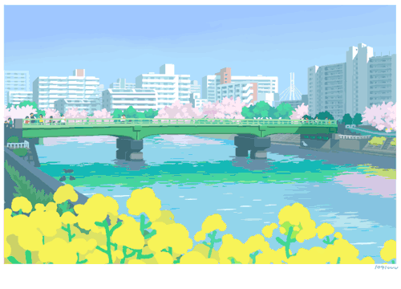

a
b
out the webma
s
ter...
go to page
honeypop
honeypop
cre
a
ta
go to page

t
u
nes
go to page
Pages of Solemnity (Listless Library) - potatoTeto (Psuedoregalia OST)
Pages of Solemnity (Listless Library) - potatoTeto (Psuedoregalia OST)
Pages of Solemnity (Listless Library) - potatoTeto (Psuedoregalia OST)
Pages of Solemnity (Listless Library) - potatoTeto (Psuedoregalia OST)
. . .